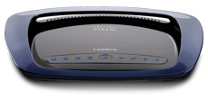

| The sleek Simultaneous Dual-N Band WRT610N Router sets a new standard for design, expanded bandwidth, and robust performance. It’s the ideal router for all your current and future digital entertainment needs |
Selectable dual band routers work in either the 2.4 or 5 gigahertz radio bands—but not at the same time Hybrid dual band routers work with “standard” Wireless-G in one radio band and faster Wireless-N in the other radio band The Linksys by Cisco WRT610N works simultaneously with Wireless-N in both the 2.4 GHz and 5 GHz radio bands, doubling network capacity  This means you get twice the bandwidth for smooth high-definition video, lag free gaming, and uninterrupted music in one band, while browsing the Internet, sharing files, sending e-mail, and printing in the other. Wireless-N gives you incredible range and speed in both bands, while Linksys' Entertainment Optimized Networking (EON) technology prioritizes network traffic so that time-sensitive applications like HD video stream smoothly. |
The Storage Link feature lets you connect a hard drive or flash-based USB storage device directly to your network to easily add gigabytes of storage. Access your music, video, or data files from any PC within your network, or through the Internet. The 4 built-in Gigabit ports provide far faster connections to your wired devices than standard Ethernet ports. Setup is designed to be quick and easy with the PC or Mac compatible Setup Wizard. And Wi-Fi Protected Setup™ can help make secure wireless connections with the press of a button. Use the included Linksys EasyLink Advisor (LELA) program as your personal technology expert to help manage and optimize your network as it grows. A Setup Wizard guides quick installation for Windows XP, Windows Vista and Macintosh OS X operating systems. The Dual-N Bands are designed to stream uninterrupted video from an Apple TV or Windows Media Center to your home theater or HDTV. |